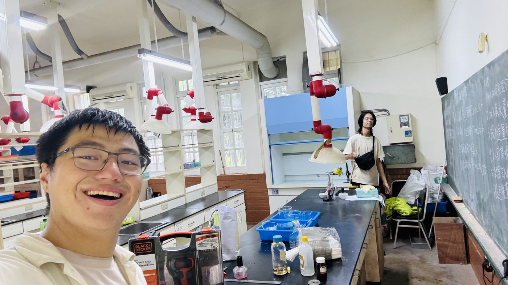

Robots for long-term care. I want to build robots that carry out contact-rich care tasks on a person who cannot cooperate, ending with diaper changing. I came to this from two years of clinical motion capture in hospitals and day-care centres, and my questions come from there: what a robot must know about a person before it moves them, and what its sensors can tell it at the moment of contact.
Education
National Yang Ming Chiao Tung University (NYCU) — B.S., Biomedical Engineering · Sep 2020 – Jun 2024
GPA 3.72 / 4.30 · final two years 4.07 / 4.30 · IELTS 8.0 (R 9.0, L 8.5, S 7.5, W 6.5)
NYCU — M.S., Biomedical Engineering · entered Feb 2025, on approved leave since May 2025
Research experience
Oct 2023 – Sep 2025
Markerless Motion Capture for the Clinic — NYCU
Research Assistant, then Team Lead of five · Advisors: Prof. Hui-Ting Shih, Prof. You-Yin Chen
Led the real-time pipeline: GPU acceleration and CPU parallelism across capture, inference, triangulation and inverse kinematics; DLT with occlusion handling; an outlier-rejection algorithm (ROWV). Validated it against VICON over 21 participants. Also prototyped camera streaming from an Ameba AMB82 board over the network, so the system would not need a workstation on site (single board working).
Took it into hospitals: 2 signed MOUs (Taipei Veterans General; Taipei City Hospital), 40+ stroke patients at Kaohsiung Chang Gung Memorial Hospital, 20+ older adults at a day-care centre, feedback trials with amputees. Clinician GUI (PyQt6); with the team, an SQL and cloud pipeline with ICD-10 coding and a rehabilitation game; 6 media features.
From it, a journal manuscript (first author, with H.-T. Shih; submitted to Journal of Biomechanics, BM-D-26-02122): in forward-dynamic gait simulation, identification of a weak muscle group falls from 0.845 to 0.549 as joint-angle error grows from 0° to 12°.
Nov 2026 – present
Robot Cup-Feeding for People with Dysphagia — NYCU Computer Science
Student Research Assistant in Prof. Yi-Ting Chen's lab since Sep 2026 · leads the lab's assisted-swallowing work · simulation only
A virtual swallowing patient (healthy baseline so far): a GPU particle model of a 5 mL swallow in a throat taken from a CT scan. After four motion errors were corrected, pharyngeal residue fell from 2.13 to 0.12 mL, inside the healthy range; simulated aspiration (0.0125 mL) is not yet zero.
A cup controller that follows the head and holds the liquid at the rim: a notch at the slosh frequency cut rim-level fluctuation from 2.04 to 0.87 mm. Simulation and design only; no robot trial yet.
Sep 2026 – present
Piezoelectric Contact Sensing — NYCU Electrical and Control Engineering
Student Research Assistant, Prof. Jing-Chen Hong's lab · measured on a real racket; board designed, not yet fabricated
Measured first: four piezo discs on the blade, 4 channels at 96 kHz. Tap and ball-drop tests place the blade's modes near 280 Hz, 750 Hz and 1 kHz, with 99% of the energy below 5 kHz.
Then designed a 6-layer, 18 × 75 mm board that fits inside the handle: 11 charge-amplifier channels, two synchronised 24-bit ADCs, IMU, Wi-Fi and charging, 235 components. Pre-fabrication circuit simulation exposed a bias error 50 times the ADC noise floor, corrected before ordering.
Oct 2025 – present
Contact Safety for Care Robots — independent, sole author
Gentle by knowing: person knowledge protects restricted joints better than force thresholds in simulated robotic arm lifting — Frontiers in Robotics and AI: peer review completed, both reviewers endorsed publication
When a robot supports a limb from outside, the loaded joint is not on the axis of its force sensor. The tightest force guard lowered mean joint load by 29–36% but changed harmful outcomes by only 0–7 points. With a complete care record, a policy learned offline cut harmful outcomes from 110 to 25 of 300 new simulated persons, mainly by declining 91; replicated on 300 more (−0.27 [−0.32, −0.21]).
Do Not Stop at First Contact: deliberate overshoot makes a care robot's pain risk robust to its noise model — submitted, IEEE Robotics and Automation Letters
A robot that stops at first resistance has one reading, at its sensor's detection floor. Pushing 2.4° further keeps a stated 5% pain risk at 5.0–6.3% while the assumed noise ranges up to seven times the truth, against 6.7–17.1% for stopping at contact. The cost: more simulated persons hurt while probing.
Nov 2026
Humanoid Walking — independent, sole author
A predictor placed in front of a frozen walking policy raises the round-trip delay it tolerates from 41–46 ms to 147–180 ms on three simulated humanoids (submitted, IEEE Robotics and Automation Letters). Scored with clinical ataxia gait measures, the same humanoids scatter their feet 2.1–2.9 times as much as healthy adults; the cause was traced to sensor noise (manuscript in preparation).
methadone intake records (Dr. Tso-Jeng Wang, 2023–)
Earlier — EEG and EMG signal analysis (Prof. You-Yin Chen, 2022–23)
Sole software developer of a pipeline for 24-hour recordings (filtering, spectral and time–frequency features, automatic sleep staging; 24 hours processed in 3 minutes); a behavioural analysis of 1,009,074 daily dosing records from one clinic (manuscript in preparation).
Publications and manuscripts
Journal article (co-author). Li, S.-J., et al. incl. Wang, M.-H.Nucleus accumbens deep brain stimulation improves depressive-like behaviors. Neurobiology of Stress, 2023.
Conference papers. SEMBA 2025 (two, one as first author) · ASB 2025 · ISMRM 2024 · ICMST 2024 (podium speaker) · GCBME 2022 (speaker).
Under review, 2026.Frontiers in Robotics and AI (2019057; peer review completed, both reviewers endorsed publication) · IEEE RA-L (26-6751, 26-6874, 26-7088) · IEEE TCDS (TCDS-2026-0625) · Machine Learning. Sole author except where noted.
In preparation. Humanoid gait and ataxia measures · methadone intake as a behavioural signal (with T.-J. Wang) · what language models carry into the next task · lay religious giving after the Black Death.
Teaching
Feb – Aug 2026
Physical Science teacher, Grade 8
Tamkang High School, New Taipei
Taught the full Grade-8 physical science curriculum to two of the grade's eight classes.

The Grade-8 physical science laboratory at Tamkang High School.
Class 8 finished 2nd of eight classes on the third term exam, up from 3rd, with
its mean margin over the school average widening from +5.1 to +11.8 points across three
term exams.
The gain came from the bottom of the distribution, not the top. By the third
exam, Class 8's bottom-quartile cutoff (78) had reached the school-wide median, and its
bottom-12 % cutoff stood 28 points above the school's — up from a 14-point gap
on the first exam.
Class 8 held the second-narrowest score spread in the grade (SD 15.07 against a
school-wide 21.86): the class improved by pulling up students who were behind, not by
stretching students already ahead.
Designed the mechanism that produced it. The class earned its reward only if
every student scored 100 — a 10-minute paper, then open discussion, then a
fresh paper, repeated until the whole class cleared it. The collective condition put the
strongest students to work teaching the weakest, which is where the measured gain came
from.
Ran self-initiated weekly remedial sessions outside class hours across three
grades, targeted at the students who were behind — not assigned by the school.
Ran hands-on chemistry and physics activities outside the syllabus, and class events to
build cohesion.
Bench and embedded — oscilloscope and signal-generator work · soldered measurement circuits · Ameba AMB82 firmware
Systems and statistics — real-time GPU and CPU pipelines (CuPy, Numba), PyQt6, SQL · paired designs, bootstrap intervals, non-inferiority tests
Awards — 2nd Place, AI Startup Youth Hackathon, Ministry of Digital Affairs (2023) · 1st Place, Elderly Health and Technology Proposal Competition, NCNU (2023)